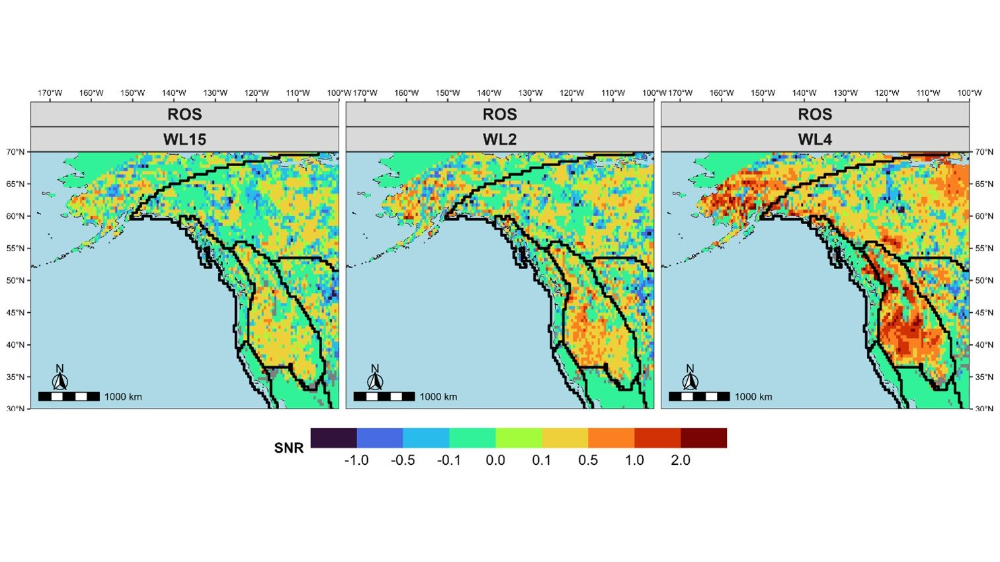

Across CanadaNonstationary compound hydroclimatic extremes
The lab's core NSERC Discovery program: how compound and successive extremes change in a warming climate, and what that means for the design values and resilience of infrastructure.